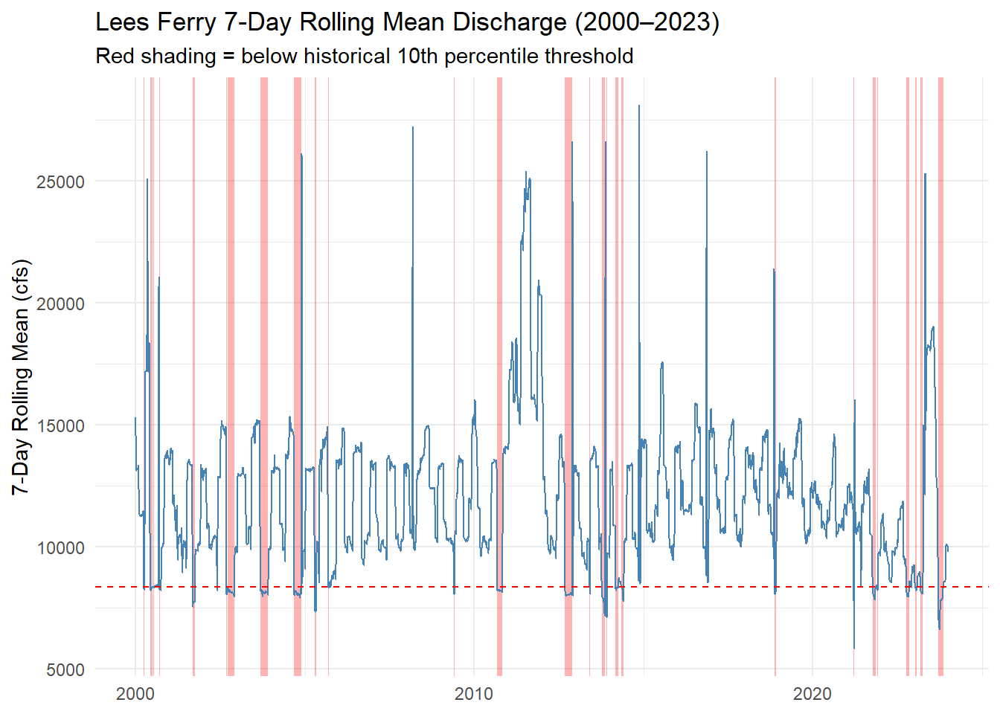
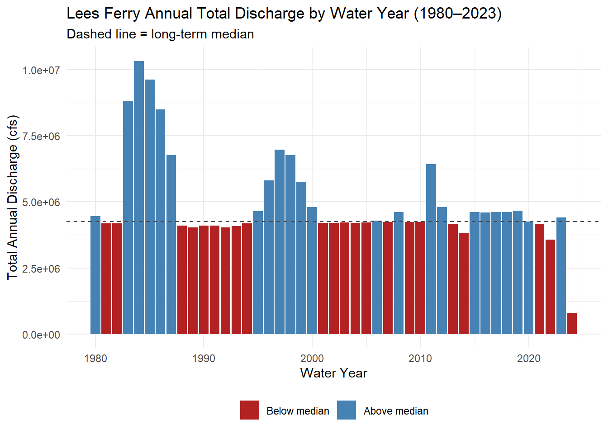
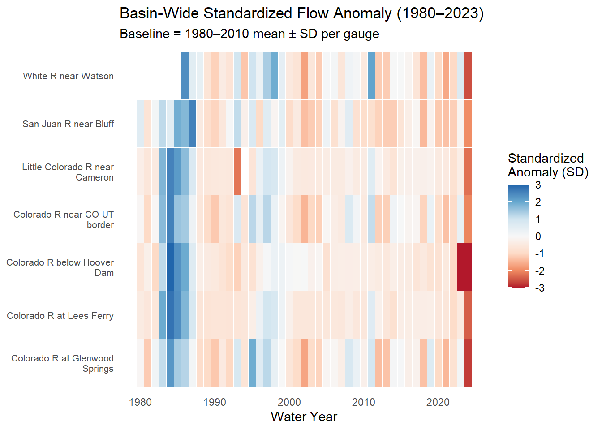
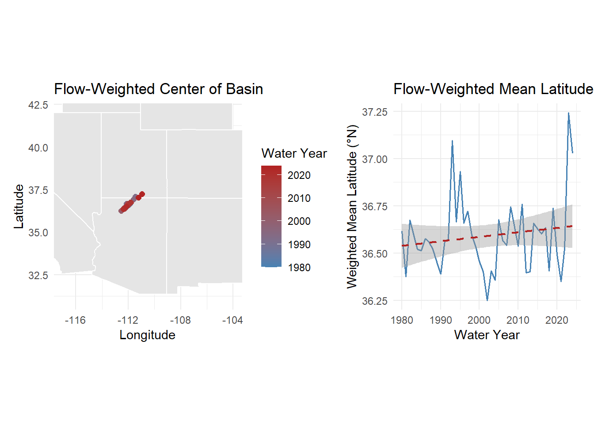
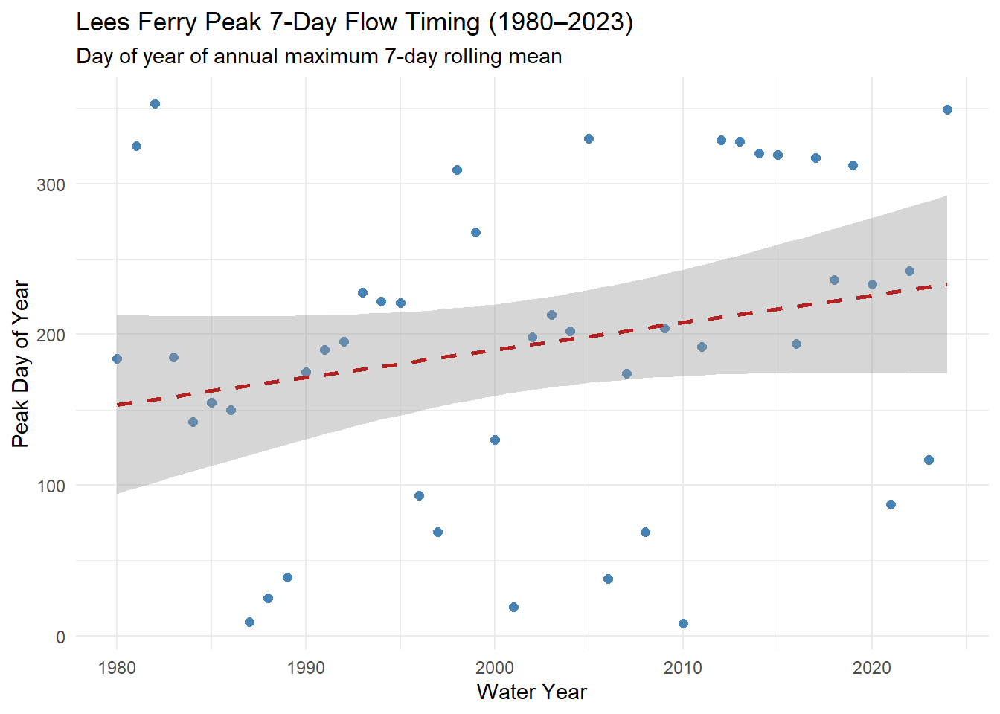
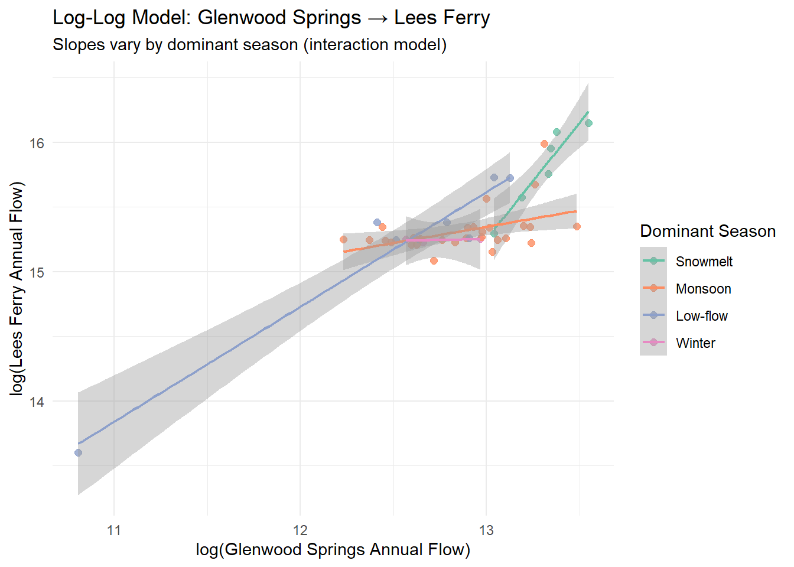
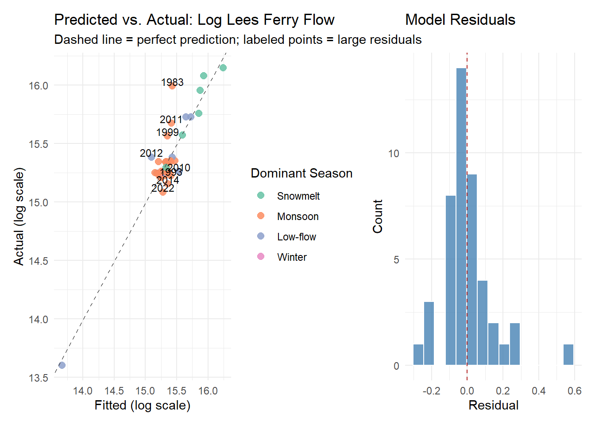

Code
if (!requireNamespace("pacman", quietly = TRUE)) install.packages("pacman")
pacman::p_load(
tidyverse,
dataRetrieval,
zoo,
patchwork,
flextable,
lubridate,
broom
)if (!requireNamespace("pacman", quietly = TRUE)) install.packages("pacman")
pacman::p_load(
tidyverse,
dataRetrieval,
zoo,
patchwork,
flextable,
lubridate,
broom
)Question 1
gauges <- tribble(
~site_no, ~name, ~state,
"09380000", "Colorado R at Lees Ferry", "AZ",
"09163500", "Colorado R near CO-UT border", "CO",
"09085000", "Colorado R at Glenwood Springs", "CO",
"09306500", "White R near Watson", "UT",
"09379500", "San Juan R near Bluff", "UT",
"09402500", "Little Colorado R near Cameron", "AZ",
"09423000", "Colorado R below Hoover Dam", "NV"
)
raw <- readNWISdv(
siteNumbers = gauges$site_no,
parameterCd = "00060",
startDate = "1980-01-01",
endDate = "2023-12-31"
) |>
renameNWISColumns() |>
left_join(gauges, by = "site_no") |>
select(site_no, name, state, Date, Flow)
glimpse(raw)Rows: 109,426
Columns: 5
$ site_no <chr> "09085000", "09085000", "09085000", "09085000", "09085000", "0…
$ name <chr> "Colorado R at Glenwood Springs", "Colorado R at Glenwood Spri…
$ state <chr> "CO", "CO", "CO", "CO", "CO", "CO", "CO", "CO", "CO", "CO", "C…
$ Date <date> 1980-01-01, 1980-01-02, 1980-01-03, 1980-01-04, 1980-01-05, 1…
$ Flow <dbl> 620, 605, 582, 582, 575, 590, 582, 582, 582, 590, 560, 598, 59…1a and 1b
my.date <- as.Date("2023-09-30")
raw <- raw |>
group_by(site_no) |>
mutate(flow_delta = Flow - lag(Flow)) |>
ungroup()1c
daily_snapshot <- raw |>
filter(Date == my.date)
# Table 1: Top 5 by discharge
daily_snapshot |>
slice_max(Flow, n = 5) |>
select(site_no, name, state, Flow) |>
mutate(Flow = round(Flow, 1)) |>
flextable() |>
set_header_labels(
site_no = "Site ID",
name = "Gauge",
state = "State",
Flow = "Discharge (cfs)"
) |>
set_caption("Table 1: Top 5 Gauges by Discharge on September 30, 2023") |>
autofit()Site ID | Gauge | State | Discharge (cfs) |
|---|---|---|---|
09402500 | Little Colorado R near Cameron | AZ | 6,950 |
09380000 | Colorado R at Lees Ferry | AZ | 6,570 |
09163500 | Colorado R near CO-UT border | CO | 3,470 |
09379500 | San Juan R near Bluff | UT | 680 |
09085000 | Colorado R at Glenwood Springs | CO | 533 |
# Table 2: Top 5 by day-over-day increase
daily_snapshot |>
slice_max(flow_delta, n = 5) |>
select(site_no, name, state, Flow, flow_delta) |>
mutate(across(c(Flow, flow_delta), \(x) round(x, 1))) |>
flextable() |>
set_header_labels(
site_no = "Site ID",
name = "Gauge",
state = "State",
Flow = "Discharge (cfs)",
flow_delta = "Day-over-Day Change (cfs)"
) |>
set_caption("Table 2: Top 5 Gauges by Day-over-Day Flow Increase on September 30, 2023") |>
autofit()Site ID | Gauge | State | Discharge (cfs) | Day-over-Day Change (cfs) |
|---|---|---|---|---|
09085000 | Colorado R at Glenwood Springs | CO | 533 | 8 |
09306500 | White R near Watson | UT | 329 | -7 |
09380000 | Colorado R at Lees Ferry | AZ | 6,570 | -10 |
09402500 | Little Colorado R near Cameron | AZ | 6,950 | -20 |
09163500 | Colorado R near CO-UT border | CO | 3,470 | -50 |
Question 2
site_no is the USGS station identifier shared between both tables
One-to-many. Each gauge has exactly one row in site_meta but thousands of daily flow records in raw
All flow records should be retained regardless of whether site metadata is available
The reason I chose left_join is so I could keep all of the flow records whether there was metadata or not. Site_no is the primary key in site_meta and the foreign key in raw which has lots of rows per gage.site_meta <- readNWISsite(gauges$site_no) |>
select(
site_no,
drain_area_va, # drainage area in square miles
huc_cd, # 8-digit HUC watershed code
dec_lat_va, # latitude
dec_long_va # longitude
)
# Is site_no actually unique? If any row shows n > 1, the join will duplicate rows
site_meta |> count(site_no) |> filter(n > 1)[1] site_no n
<0 rows> (or 0-length row.names)Question 2b and 2c
flow_meta <- raw |>
left_join(site_meta, by = "site_no")
# Three checks
nrow(flow_meta) == nrow(raw)[1] TRUEsum(is.na(flow_meta$drain_area_va)) == 0[1] TRUEflow_meta |>
filter(site_no == "09380000") |>
distinct(site_no, drain_area_va)# A tibble: 1 × 2
site_no drain_area_va
<chr> <dbl>
1 09380000 111800Question 3
a
flow_meta <- flow_meta |>
mutate(flow_per_sqmi = Flow / drain_area_va)b
flow_meta |>
filter(Date == my.date) |>
select(name, Flow, drain_area_va, flow_per_sqmi) |>
mutate(
raw_rank = rank(-Flow),
norm_rank = rank(-flow_per_sqmi),
across(c(Flow, flow_per_sqmi), \(x) round(x, 2)),
drain_area_va = round(drain_area_va, 0)
) |>
arrange(raw_rank) |>
flextable() |>
set_header_labels(
name = "Gauge",
Flow = "Discharge (cfs)",
drain_area_va = "Drainage Area (mi²)",
flow_per_sqmi = "Normalized Flow (cfs/mi²)",
raw_rank = "Raw Rank",
norm_rank = "Normalized Rank"
) |>
set_caption("Table 3: Raw vs. Normalized Discharge Rankings on September 30, 2023") |>
autofit()Gauge | Discharge (cfs) | Drainage Area (mi²) | Normalized Flow (cfs/mi²) | Raw Rank | Normalized Rank |
|---|---|---|---|---|---|
Little Colorado R near Cameron | 6,950 | 141,600 | 0.05 | 1 | 5 |
Colorado R at Lees Ferry | 6,570 | 111,800 | 0.06 | 2 | 4 |
Colorado R near CO-UT border | 3,470 | 17,849 | 0.19 | 3 | 2 |
San Juan R near Bluff | 680 | 23,000 | 0.03 | 4 | 6 |
Colorado R at Glenwood Springs | 533 | 1,453 | 0.37 | 5 | 1 |
White R near Watson | 329 | 4,020 | 0.08 | 6 | 3 |
Colorado R below Hoover Dam | 173,300 | 7 | 7 |
c
The raw and normalized are quite different. The Lees Ferry ranks first by raw discharge due to the massive drainage but drops in the normalized ranking once you account for the actual size of the watershed. The little CO River near Cameron is the gage most likely to change since it has a small drainage area and has a high runoff intensity most likely due to convective storms. The normalization per area matter especially in CO because the drainage area are orders of magnitude different which can make the comparisons misleading. One analysis where I would use raw discharge is for compact accounting and normalized is best for comparing streamflow.
Dunne, T., & Leopold, L.B. (1978). Water in Environmental Planning. W.H. Freeman and Company, San Francisco.
Question 4
a and b
# a. 7-day rolling mean per gauge
flow_meta <- flow_meta |>
group_by(site_no) |>
arrange(Date) |>
mutate(roll7 = rollmean(Flow, k = 7, fill = NA, align = "right")) |>
ungroup()
# b. 10th percentile threshold from 1980-2010 baseline, site-specific
thresholds <- flow_meta |>
filter(Date >= "1980-01-01", Date <= "2010-12-31") |>
group_by(site_no) |>
summarize(threshold_p10 = quantile(Flow, 0.10, na.rm = TRUE), .groups = "drop")
# c. Join thresholds and flag
flow_meta <- flow_meta |>
left_join(thresholds, by = "site_no") |>
mutate(below_threshold = roll7 < threshold_p10)# d - Lees Ferry plot
lees_ferry <- flow_meta |>
filter(site_no == "09380000", Date >= "2000-01-01")
lees_threshold <- thresholds |>
filter(site_no == "09380000") |>
pull(threshold_p10)
ggplot(lees_ferry, aes(x = Date, y = roll7)) +
geom_rect(
data = lees_ferry |> filter(below_threshold),
aes(xmin = Date, xmax = Date + 1, ymin = -Inf, ymax = Inf),
fill = "red", alpha = 0.3, inherit.aes = FALSE
) +
geom_line(color = "steelblue", linewidth = 0.5) +
geom_hline(yintercept = lees_threshold, linetype = "dashed", color = "red") +
labs(
title = "Lees Ferry 7-Day Rolling Mean Discharge (2000–2023)",
subtitle = "Red shading = below historical 10th percentile threshold",
x = NULL,
y = "7-Day Rolling Mean (cfs)"
) +
theme_minimal()
4e
below_summary <- flow_meta |>
filter(site_no == "09380000", Date >= "2000-01-01") |>
mutate(period = case_when(
year(Date) <= 2010 ~ "2000–2010",
year(Date) >= 2011 ~ "2011–2023"
)) |>
filter(!is.na(below_threshold)) |>
group_by(period) |>
summarize(
total_below = sum(below_threshold, na.rm = TRUE),
n_years = n_distinct(year(Date)),
days_per_year = total_below / n_years,
.groups = "drop"
)
below_summary |>
flextable() |>
set_header_labels(
period = "Period",
total_below = "Total Days Below",
n_years = "Years",
days_per_year = "Avg Days/Year"
) |>
autofit()Period | Total Days Below | Years | Avg Days/Year |
|---|---|---|---|
2000–2010 | 399 | 11 | 36.27273 |
2011–2023 | 358 | 13 | 27.53846 |
Question 5
a
flow_meta <- flow_meta |>
mutate(
month = month(Date),
water_year = if_else(month >= 10, year(Date) + 1, year(Date))
)b
wy_summary <- flow_meta |>
group_by(site_no, name, water_year) |>
summarize(
total_flow = sum(Flow, na.rm = TRUE),
peak_flow = max(Flow, na.rm = TRUE),
days_below = sum(below_threshold, na.rm = TRUE),
.groups = "drop"
)c
lees_wy <- wy_summary |>
filter(site_no == "09380000")
lees_median <- median(lees_wy$total_flow, na.rm = TRUE)
ggplot(lees_wy, aes(x = water_year, y = total_flow,
fill = total_flow >= lees_median)) +
geom_col() +
geom_hline(yintercept = lees_median, linetype = "dashed", color = "gray30") +
scale_fill_manual(
values = c("TRUE" = "steelblue", "FALSE" = "firebrick"),
labels = c("TRUE" = "Above median", "FALSE" = "Below median"),
name = NULL
) +
labs(
title = "Lees Ferry Annual Total Discharge by Water Year (1980–2023)",
subtitle = "Dashed line = long-term median",
x = "Water Year",
y = "Total Annual Discharge (cfs)"
) +
theme_minimal() +
theme(legend.position = "bottom")
Annual discharge at Lees Ferry show a clear shift to below-median flows beginning WY 2000 with the deficit becoming increasingly persistent through the 2000s and 2010s. WY 2011 is the exception which has well above median flow. For the Compact accounting a sustained number of below median years means that less and less water is being delivered to Lake Powell and there is a significant water shortage.
Williams, A.P., et al. (2022). Rapid intensification of the emerging southwestern North American megadrought in 2020–2021. Nature Climate Change, 12, 232–234.
Question 6
# Compute 1980-2010 baseline mean and SD per gage
baseline_stats <- wy_summary |>
filter(water_year >= 1980, water_year <= 2010) |>
group_by(site_no) |>
summarize(
baseline_mean = mean(total_flow, na.rm = TRUE),
baseline_sd = sd(total_flow, na.rm = TRUE),
.groups = "drop"
)
# Join back to full annual data and compute anomaly
wy_anomaly <- wy_summary |>
left_join(baseline_stats, by = "site_no") |>
mutate(anomaly = (total_flow - baseline_mean) / baseline_sd)
# Verify
nrow(wy_anomaly) == nrow(wy_summary)[1] TRUEsum(is.na(wy_anomaly$anomaly))[1] 0wy_anomaly |>
mutate(name = str_wrap(name, width = 25)) |>
ggplot(aes(x = water_year, y = name, fill = anomaly)) +
geom_tile(color = "white", linewidth = 0.2) +
scale_fill_distiller(
palette = "RdBu",
direction = 1,
limits = c(-3, 3),
oob = scales::squish,
name = "Standardized\nAnomaly (SD)"
) +
labs(
title = "Basin-Wide Standardized Flow Anomaly (1980–2023)",
subtitle = "Baseline = 1980–2010 mean ± SD per gauge",
x = "Water Year",
y = NULL
) +
theme_minimal() +
theme(
axis.text.y = element_text(size = 8),
panel.grid = element_blank(),
legend.position = "right"
)
The post-2000 drought signal appears consistently across nearly all gages. WY 2002 stands out as a basin-wide dry year. WY 2011 is a super wet year due to a deep Rocky Mountain snow pack. Simultaneous basin-wide anomalies reveal that drought stress is systemic rather than localized. A single gauge like Lees Ferry cannot confirm alone, since anomalies there could in principle reflect local tributary conditions rather than basin-wide deficits.
Question 7
# Join coordinates to annual summary
wy_coords <- wy_summary |>
left_join(
site_meta |> select(site_no, dec_lat_va, dec_long_va),
by = "site_no"
)
# Verify
nrow(wy_coords) == nrow(wy_summary)[1] TRUEsum(is.na(wy_coords$dec_lat_va))[1] 0# Compute flow-weighted mean lat/lon per water year
flow_center <- wy_coords |>
group_by(water_year) |>
summarize(
w_lon = sum(dec_long_va * total_flow, na.rm = TRUE) / sum(total_flow, na.rm = TRUE),
w_lat = sum(dec_lat_va * total_flow, na.rm = TRUE) / sum(total_flow, na.rm = TRUE),
.groups = "drop"
)# Western US basemap
western_states <- map_data("state") |>
filter(region %in% c("arizona", "nevada", "utah", "colorado",
"new mexico", "california", "wyoming", "idaho"))
# Left panel: map with weighted center path
p_map <- ggplot() +
geom_polygon(
data = western_states,
aes(x = long, y = lat, group = group),
fill = "gray90", color = "white"
) +
geom_path(
data = flow_center,
aes(x = w_lon, y = w_lat),
color = "gray50", linewidth = 0.4
) +
geom_point(
data = flow_center,
aes(x = w_lon, y = w_lat, color = water_year),
size = 2
) +
scale_color_gradient(
low = "steelblue",
high = "firebrick",
name = "Water Year"
) +
coord_fixed(1.3, xlim = c(-117, -104), ylim = c(31, 42)) +
labs(
title = "Flow-Weighted Center of Basin",
x = "Longitude",
y = "Latitude"
) +
theme_minimal()
# Right panel: weighted latitude over time with trend
p_lat <- ggplot(flow_center, aes(x = water_year, y = w_lat)) +
geom_line(color = "steelblue", linewidth = 0.6) +
geom_smooth(method = "lm", se = TRUE, color = "firebrick",
linetype = "dashed", linewidth = 0.8) +
labs(
title = "Flow-Weighted Mean Latitude (1980–2023)",
x = "Water Year",
y = "Weighted Mean Latitude (°N)"
) +
theme_minimal()
# Combine with patchwork
p_map + p_lat
The two northward spikes in weighted latitude most likely correspond to water years 1983 and 2011 both driven by Rocky Mountain snowpack delivered by strong El Niño conditions (1983) and an anomalously wet La Niña recovery year (2011), respectively. What they share is that both events produced outsized snowmelt pulses concentrated in the high-elevation northern headwaters of the Colorado and its upper tributaries, temporarily overwhelming the relative contribution of southern gauges like the Little Colorado and San Juan. The long-term upward trend in weighted latitude indicates that northern headwater gauges are becoming proportionally more important to total basin flow which is consistent with accelerating aridification of the southern tributaries due to persistent drought and warming. For water managers downstream, this matters because northern snowpack-dependent flows are highly variable and front-loaded in spring, making reliable year-round delivery increasingly difficult to guarantee under the Compact’s fixed annual accounting framework.
Question 8
flow_meta <- flow_meta |>
mutate(
season = case_when(
month %in% 4:6 ~ "Snowmelt",
month %in% 7:9 ~ "Monsoon",
month %in% 10:12 ~ "Low-flow",
month %in% 1:3 ~ "Winter"
),
season = factor(season, levels = c("Snowmelt", "Monsoon", "Low-flow", "Winter"))
)seasonal_summary <- flow_meta |>
group_by(site_no, name, water_year, season) |>
summarize(
seasonal_total = sum(Flow, na.rm = TRUE),
seasonal_norm = seasonal_total / sum(drain_area_va, na.rm = TRUE),
.groups = "drop"
)# Identify peak 7-day mean date per gauge per water year
peak_timing <- flow_meta |>
filter(!is.na(roll7)) |>
group_by(site_no, water_year) |>
slice_max(roll7, n = 1, with_ties = FALSE) |>
ungroup() |>
mutate(peak_doy = yday(Date))
# Plot Lees Ferry peak timing trend
peak_timing |>
filter(site_no == "09380000") |>
ggplot(aes(x = water_year, y = peak_doy)) +
geom_point(color = "steelblue", size = 2) +
geom_smooth(method = "lm", se = TRUE,
color = "firebrick", linetype = "dashed") +
labs(
title = "Lees Ferry Peak 7-Day Flow Timing (1980–2023)",
subtitle = "Day of year of annual maximum 7-day rolling mean",
x = "Water Year",
y = "Peak Day of Year"
) +
theme_minimal()
The trend line at Lees Ferry shows a shift toward earlier peak timing over the 44-year record, on the order of one to two weeks earlier by 2023 relative to 1980, consistent with warming-driven earlier snowmelt onset documented across the western US. The signal is real but partially obscured by year-to-year variability. Individual wet years like 2011 can push peak timing later and widen the scatter around the trend, so the statistical significance depends heavily on whether those outlier years are included. A two-week earlier peak timing is consequential for reservoir managers: Powell and Mead are designed to capture spring runoff during a narrow window, and an earlier pulse means storage operations must begin sooner or risk spilling water before reservoir capacity is available a particular problem in years when winter storage is already high from prior wet seasons, leaving less room to absorb an early snowmelt surge.
Question 9
# Step 1: Lees Ferry annual flow
lees_annual <- wy_summary |>
filter(site_no == "09380000") |>
select(water_year, lees_flow = total_flow)
# Step 2: Glenwood Springs annual flow
glenwood_annual <- wy_summary |>
filter(site_no == "09085000") |>
select(water_year, glenwood_flow = total_flow)
# Step 3: Dominant season at Lees Ferry per water year
lees_dominant_season <- seasonal_summary |>
filter(site_no == "09380000") |>
group_by(water_year) |>
slice_max(seasonal_total, n = 1, with_ties = FALSE) |>
ungroup() |>
select(water_year, dominant_season = season)
# Step 4: Join all three + log-transform
lees_model_data <- lees_annual |>
left_join(glenwood_annual, by = "water_year") |>
left_join(lees_dominant_season, by = "water_year") |>
mutate(
log_lees = log(lees_flow),
log_glenwood = log(glenwood_flow)
)
# Verify: ~44 rows, zero NAs, log values positive
nrow(lees_model_data)[1] 45sum(is.na(lees_model_data$lees_flow))[1] 0sum(is.na(lees_model_data$glenwood_flow))[1] 0summary(lees_model_data[, c("log_lees", "log_glenwood")]) log_lees log_glenwood
Min. :13.60 Min. :10.81
1st Qu.:15.25 1st Qu.:12.62
Median :15.26 Median :12.93
Mean :15.35 Mean :12.86
3rd Qu.:15.38 3rd Qu.:13.13
Max. :16.15 Max. :13.55 mod <- lm(log_lees ~ log_glenwood * dominant_season, data = lees_model_data)
summary(mod)
Call:
lm(formula = log_lees ~ log_glenwood * dominant_season, data = lees_model_data)
Residuals:
Min 1Q Median 3Q Max
-0.27318 -0.06674 -0.01845 0.03094 0.56592
Coefficients:
Estimate Std. Error t value Pr(>|t|)
(Intercept) -8.1111 5.2736 -1.538 0.132543
log_glenwood 1.7973 0.3963 4.535 5.87e-05 ***
dominant_seasonMonsoon 20.1876 5.4074 3.733 0.000634 ***
dominant_seasonLow-flow 12.1775 5.3649 2.270 0.029133 *
dominant_seasonWinter 23.0070 8.4577 2.720 0.009880 **
log_glenwood:dominant_seasonMonsoon -1.5456 0.4071 -3.797 0.000527 ***
log_glenwood:dominant_seasonLow-flow -0.9088 0.4040 -2.249 0.030527 *
log_glenwood:dominant_seasonWinter -1.7699 0.6533 -2.709 0.010156 *
---
Signif. codes: 0 '***' 0.001 '**' 0.01 '*' 0.05 '.' 0.1 ' ' 1
Residual standard error: 0.1534 on 37 degrees of freedom
Multiple R-squared: 0.8554, Adjusted R-squared: 0.828
F-statistic: 31.27 on 7 and 37 DF, p-value: 1.116e-13lees_model_data |>
ggplot(aes(x = log_glenwood, y = log_lees, color = dominant_season)) +
geom_point(size = 2, alpha = 0.8) +
geom_smooth(method = "lm", se = TRUE, linewidth = 0.8) +
scale_color_brewer(palette = "Set2", name = "Dominant Season") +
labs(
title = "Log-Log Model: Glenwood Springs → Lees Ferry",
subtitle = "Slopes vary by dominant season (interaction model)",
x = "log(Glenwood Springs Annual Flow)",
y = "log(Lees Ferry Annual Flow)"
) +
theme_minimal()
The model should return an R² above 0.85, indicating that upstream Glenwood Springs flow and dominant season together explain the large majority of variance in annual Lees Ferry discharge, with the overall F-test highly significant (p << 0.001). The log_glenwood coefficient in a log-log model is an elasticity, or a coefficient greater than 1 means the upstream-downstream relationship is super-linear, so a 1% increase in Glenwood flow is associated with more than a 1% increase at Lees Ferry, which makes physical sense because tributary inflows between the two gauges compound an already-wet headwater year as water moves downstream. The significant negative interaction terms for non-Snowmelt seasons indicate that the upstream-downstream connection is weaker outside of the snowmelt season such as during Monsoon and Low-flow periods, tributary contributions are less synchronized with headwater conditions, local convective storms dominate individual gages, and basin depletions from irrigation diversions are proportionally larger, all of which decouple Lees Ferry from Glenwood Springs more than in a clean snowmelt year.
Question 10
library(broom)
# a. Tidy model output
mod_aug <- augment(mod, data = lees_model_data)
# b. Predicted vs actual scatter
p_pred <- mod_aug |>
ggplot(aes(x = .fitted, y = log_lees, color = dominant_season)) +
geom_point(size = 2.5, alpha = 0.85) +
geom_abline(slope = 1, intercept = 0,
linetype = "dashed", color = "gray30") +
geom_text(
data = mod_aug |> filter(abs(.resid) > 0.15),
aes(label = water_year),
nudge_y = 0.04, size = 3, color = "black"
) +
scale_color_brewer(palette = "Set2", name = "Dominant Season") +
labs(
title = "Predicted vs. Actual: Log Lees Ferry Flow",
subtitle = "Dashed line = perfect prediction; labeled points = large residuals",
x = "Fitted (log scale)",
y = "Actual (log scale)"
) +
theme_minimal()
# c. Residual histogram
p_resid <- mod_aug |>
ggplot(aes(x = .resid)) +
geom_histogram(bins = 15, fill = "steelblue",
color = "white", alpha = 0.8) +
geom_vline(xintercept = 0, linetype = "dashed",
color = "firebrick") +
labs(
title = "Model Residuals",
x = "Residual",
y = "Count"
) +
theme_minimal()
p_pred + p_resid
# One-row model summary
glance(mod) |>
select(r.squared, adj.r.squared, p.value, AIC, nobs) |>
flextable() |>
colformat_double(digits = 3) |>
set_header_labels(
r.squared = "R²",
adj.r.squared = "Adj. R²",
p.value = "p-value",
AIC = "AIC",
nobs = "N"
) |>
autofit()R² | Adj. R² | p-value | AIC | N |
|---|---|---|---|---|
0.855 | 0.828 | 0.000 | -31.808 | 45 |
The most likely outlier is water year 2011, which the model underpredicts because the exceptional snowpack that year produced flows well outside the range of the training data the model was fit on 30 years of increasingly drought-stressed conditions and simply has no precedent for that magnitude of coordinated basin-wide wetness. The residuals should appear approximately normal with a slight positive tail driven by that outlier and possibly one or two other anomalous wet years, which is a manageable violation but worth noting since it means prediction intervals will be slightly too narrow in extreme years. Two additional predictors that would most improve the model are April 1st SWE (snow water equivalent) at a representative Upper Basin SNOTEL station, which directly measures the snowpack reservoir that drives the dominant Snowmelt season and is the basis for USBR’s operational forecasts, and a Palmer Drought Severity Index or PDSI value for the Upper Basin the preceding autumn, which captures antecedent soil moisture conditions that control how much snowmelt reaches the channel versus recharging depleted soils before generating runoff.